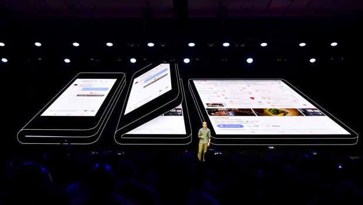

Práctica 14
El grafeno es un material nanométrico bidimensional, consistente en una sola capa de átomos de carbono fuertemente cohesionados mediante enlaces que presentan hibridación sp2 y dispuestos en una superficie uniforme, ligeramente condulada, con una estructura semejante a la de un panal de abejas por su configuración atómica hexagonal.
Leer más

Bautizado como Infinity Flex Display ofrece un nuevo tipo de experiencia en el móvil. Se trata de un smartphone compacto pero con bisagra que se despliega y aparece una pantalla envolvente de mayor tamaño para realizar mútltiples tareas y visualizar contenido. Cerrado se usa como un teléfono normal.
Leer más
| Castañas | Membrillos | ||||
Diciembre
|
|||||
Corría el año 829 según la leyenda. Un pastor encuentra un extraño sepulcro en un remoto lugar de Galicia. Lo comunica al obispo Teodomiro, y este, al rey Alfonso II el Casto, que por entonces gobernaba un pequeño reino cristiano aislado entre montañas.
El rey astur decide ir personalmente a comprobar el hallazgo, que puede suponer un cambio drástico en la situación de aislamiento de su reino.
Reúne a su séquito y toma el único camino desde Oviedo hasta entrar en Galicia por A fonsagrada
© Todos los derechos reservados - MS 2020
Diseñado por mi